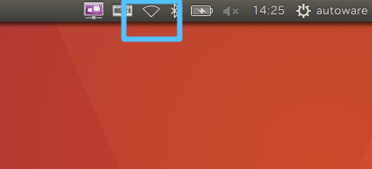

4.システムの起動
システムの起動方法を以下に示す。
Velodyneの起動
本書では、簡易的に説明する。詳細については、Velodyneマニュアル参照の事。
- Velodyneと制御用PCをLANケーブルで接続し、電源を投入する。

- 回線未接続状態であることを確認する。（上図）
- ターミナルで以下のコマンドを実行し、IPアドレス設定を行う。
# enp3s0f1 : eth名（PCによって異なるので適宜調整する）
$ sudo ifconfig enp3s0f1 192.168.1.100 ← PC側IP Addr.設定
$ sudo route add 192.168.1.201 enp3s0f1 ← Velodneへのルート設定
SMAGVの起動
- ターミナルで以下のコマンドを実行し、launchファイルを実行する。
$ roslaunch smagv_common VLPtest.launch ← 仮ファイル
Autowareの起動
- ターミナルで以下のコマンドを実行し、Autowareを実行する。
$ cd ~/Autoware/ros/
$ ./run
その他
- 特になし